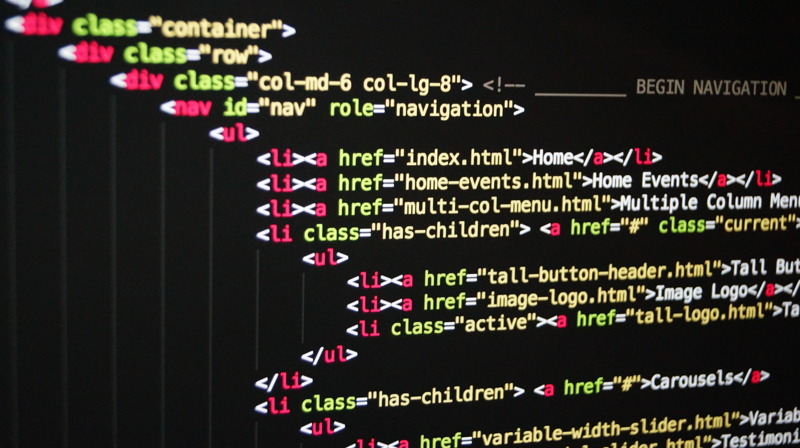

What I Learnt in this Module
Computational Thinking
I learnt about computational thinking on the first day of this module. It involves five processes, and those five processes are the key elements for solving complex problems. Furthermore, I believe that this problem-solving skill is essential not only for my future studies but also for my career. Employers like to see good problem-solving skills, to show that you have a variety of other abilities such as logic, creativity, imagination, and decisiveness (ICAEW 2022). Also, Arc-Team (2022) mentioned that developing problem-solving skills is essential for software developers, and it takes many years of practise to successfully solve problems. Therefore, I would like to develop my problem-solving skills.
Systematic Numbers
We also studied systematic numbers. We humans usually use the decimal system to represent numbers, whereas computers use binary numbers, which are represented by 0s and 1s. At the same time, we learnt octal and hexadecimal and solved calculation problems, such as decimal to binary and decimal to hexadecimal. I found it especially difficult to express the decimal point in binary. I also did not understand it only attending the lectures, so I did some self-study and calculation exercises, which helped me to deepen my understanding of the subject.
Introduction to Programming
In the introduction to programming, I was taught programming concepts and ideas that are universal to all languages, rather than those specific to JavaScript or Python. For example, we learnt about variables, conditional statements, and loops, and we also attempted eight problems, but I was disappointed because I could only solve about half of them. However, I believe that these abilities are necessary for future modules. Furthermore, Swift is primarily used to develop iOS applications, and I consider that this fundamental concept will be required when learning a new programming language.
HTML and CSS
In the HTML and CSS lectures, there was a time when we created a fake university website in groups. I thought it looked like a normal website, but when we started building our own website from scratch using HTML and CSS, I found it difficult to apply the many different HTML tags and CSS properties in the way we wanted. However, they are immediately reflected on the website, which made learning about them challenging and enjoyable. Additionally, according to Olawanle (2022), it is critical to understand that HTML, CSS, and JavaScript are the three key elements that comprise the content of a website and that a basic understanding of them is required for any front-end engineer. Therefore, as I consider a career as a front-end engineer, I believe these two skills are essential.
Summary
In this subject, I studied computational thinking, problem solving skills, basic programming concepts, HTML & CSS, and other topics. What I have learnt in this module should be useful not only for future modules but also for my career. I believe that I gained valuable knowledge as an introduction to computer science.